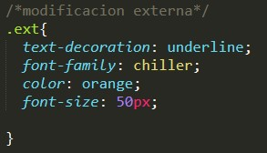

¿Qué es CSS y para qué sirve?
CSS es un lenguaje utilizado en la presentación de documentos HTML.
Un documento HTML viene siendo coloquialmente “una página web”.
Entonces podemos decir que el lenguaje CSS sirve para organizar la
presentación y aspecto de una página web. Este lenguaje es principalmente
utilizado por parte de los navegadores web de internet y por los programadores web
informáticos para elegir multitud de opciones de presentación como colores, tipos y
tamaños de letra, etc.
¿Qué significan las siglas del acrónimo CSS?
La hoja de estilo en cascada o CSS (siglas en inglés de cascading style sheets)
es un lenguaje usado para definir la presentación de un documento estructurado
escrito en HTML y derivados.
Breve historia de CSS
Las hojas de estilos aparecieron poco después que el lenguaje de etiquetas SGML,
alrededor del año 1970. Desde la creación de SGML, se observó la necesidad de definir
un mecanismo que permitiera aplicar de forma consistente diferentes estilos a los documentos
electrónicos.
El gran impulso de los lenguajes de hojas de estilos se produjo con el boom de Internet y
el crecimiento exponencial del lenguaje HTML para la creación de documentos electrónicos.
La guerra de navegadores y la falta de un estándar para la definición de los estilos dificultaban
la creación de documentos con la misma apariencia en diferentes navegadores.
El organismo W3C (World Wide Web Consortium), encargado de crear todos los estándares relacionados
con la web, propuso la creación de un lenguaje de hojas de estilos específico para el lenguaje HTML y se presentaron nueve propuestas. Las dos propuestas que se tuvieron en cuenta fueron la CHSS (Cascading HTML Style Sheets) y la SSP (Stream-based Style Sheet Proposal).
La propuesta CHSS fue realizada por Håkon Wium Lie y SSP fue propuesto por Bert Bos.
Entre finales de 1994 y 1995 Lie y Bos se unieron para definir un nuevo lenguaje que
tomaba lo mejor de cada propuesta y lo llamaron CSS (Cascading Style Sheets).
Formas de aplicar CSS,
Ya hemos visto que existen estilos por defecto que aplican automáticamente los navegadores
web cuando no hay estilos especificados, así como que podemos embeber código CSS en las
propias etiquetas de HTML, “en línea”. Vamos a ver ahora dos formas adicionales de aplicar
estilos CSS: en la parte inicial del documento HTML (aplicación de estilos interna o CSS interno)
o en un archivo de extensión .css independiente del archivo HTML (aplicación de estilos externa o CSS externo).
¿QUÉ TIPO DE CSS USAR?
En la siguiente tabla hacemos un resumen de las características de los distintos tipos de CSS que hemos
visto hasta el momento:
|
DECLARACIÓN CSS
|
ARCHIVOS AFECTADOS
|
CSS SE APLICA A
|
|
En línea
|
Uno, aquel donde se realiza la declaración
|
Una línea de código.
|
|
Interna
|
Uno, aquel en cuya cabecera se realiza la declaración
|
Todos los elementos del archivo en los que resulte de aplicación el estilo
|
|
Externa
|
Todos los archivos que invoquen el archivo css
|
Todos los elementos de los archivos afectados en que resulte de aplicación el estilo
|
ejemplos:
En linea
Se modifica de esta manera
Interna
Se modifica de esta manera
externa
Se modifica de esta manera
Qué es un comentario y como se escribe en CSS.
Un comentario es una cadena de código o texto en HTML, XML, CSS, JS y otros lenguajes de programación que
no es visible en su navegador web. El comentario es utilizado para ofrecer alguna información sobre el código,
desactivarlo temporalmente o para presentar otros comentarios de los desarrolladores de código.
